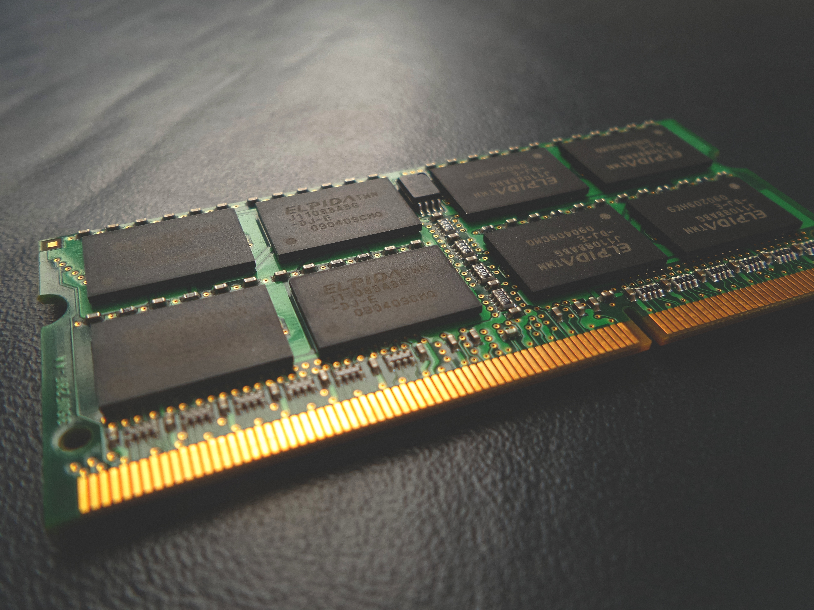
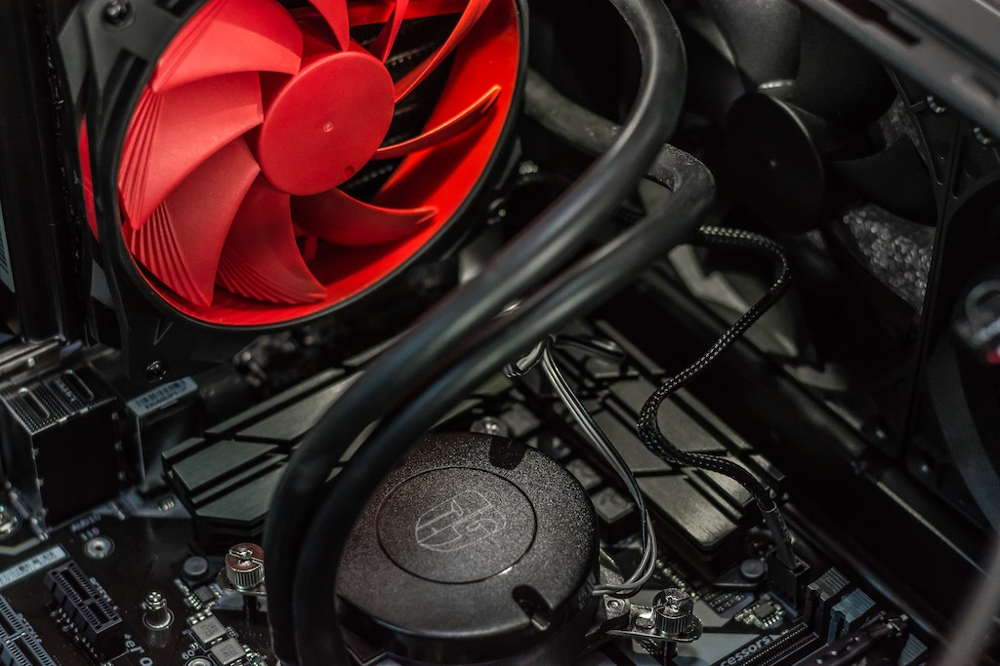
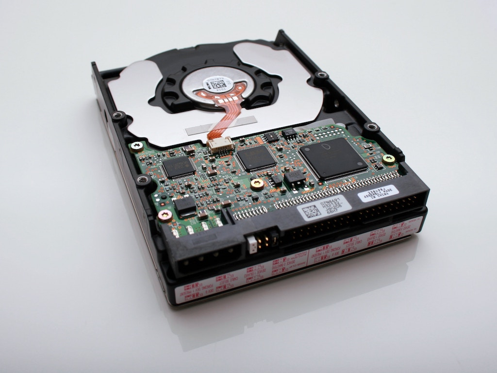
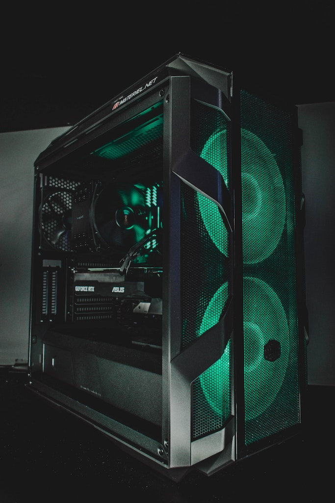

Now this is important, you need to be able to SEE what your
A little bit about the parts, The most expensive are the processor, graphics card, and ram at the moment, Ranging from $100 to $5000 depending on how high spec you want your system to be.
This is what's important for those people who love to leave thousands of tabs in the background
The Most important part of having a processor is a way to cool it, because it gets HOT-HOT-HOT!!!
Now you may have heard something about bitcoin
For the Hard Drive, it depends on how fast you want it, but it's safe to have an ssd for booting and a Platter Drive for storing large quantities of items.
This is where you can get away with saving money, but it's also where you can have the most fun in the end.
To some, building a pc is an art that needs to be showcased and to others its just about the performance and just stashes the desktop away.
